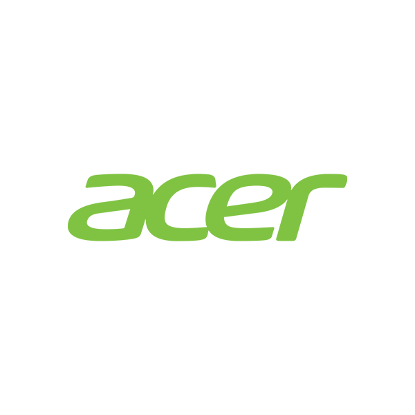

Educando para reciclar, transformar e conectar
Oferecemos coleta e assistência especializada para quem precisa descartar lixo eletrônico de maneira segura e ambientalmente correta.
Agendar Coleta
Oferecemos coleta e assistência especializada para quem precisa descartar lixo eletrônico de maneira segura e ambientalmente correta.
Agendar Coleta

Nossa equipe assegura que os dispositivos sejam transportados de forma segura e eficiente, contribuindo para a preservação do meio ambiente.

Trabalhamos em colaboração com empresas especializadas na desmontagem e reciclagem de aparelhos eletrônicos. Elas garantem que os dispositivos sejam desmontados de maneira segura e responsável, seguindo os mais altos padrões de sustentabilidade.


Lixo eletrônico inclui dispositivos elétricos e eletrônicos descartados, como celulares, computadores, televisores, cabos, carregadores, eletrodomésticos e baterias. Esses itens contêm materiais valiosos que podem ser reciclados, mas também componentes tóxicos que precisam de tratamento especial.
Após agendar a coleta no site ou aplicativo, nossa equipe irá até o endereço fornecido na data e horário escolhidos. Certifique-se de que os itens estejam separados e identificados para facilitar o transporte e o descarte correto.
Os pontos são recompensas obtidas ao descartar seu lixo eletrônico de forma correta. Eles podem ser acumulados e trocados por descontos em produtos ou serviços de empresas parceiras. Para utilizá-los, acesse o seu perfil ao clicar nele, onde você pode verificar seu saldo de pontos e escolher como deseja utilizá-los no catálogo de benefícios.